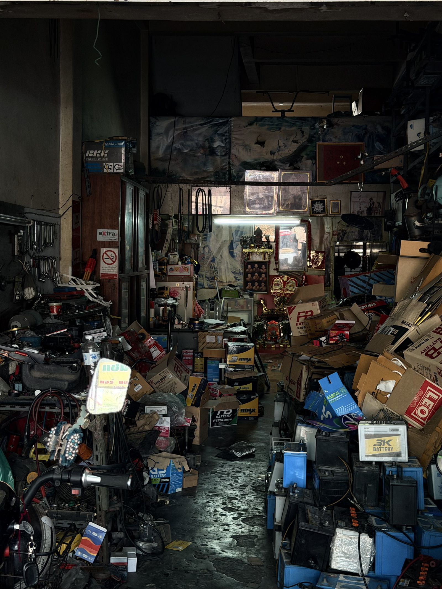

How I work
Understand first. Then build the smallest tool that does the job.
A lot of technology does harm: e-waste and emissions, damage in the places its materials come from and apps built to hold on to your attention. Tools for good shouldn't repeat that.
- Listen first
Across languages and cultures, until the real problem is clear. Most of the work happens before the first line of code.
- Only what's needed
Less code, less energy, less to maintain. If a spreadsheet solves it, I'll tell you.
- No attention traps
Tools people open, use and close. Everything built is there for a reason, otherwise it doesn't stay.
- Light footprint
Efficient on old phones and slow connections. Lean and cost-efficient hosting.
- Security and maintainability
Collect only what's needed, share only what needs to be shared, and make sure the solution can be maintained and extended.